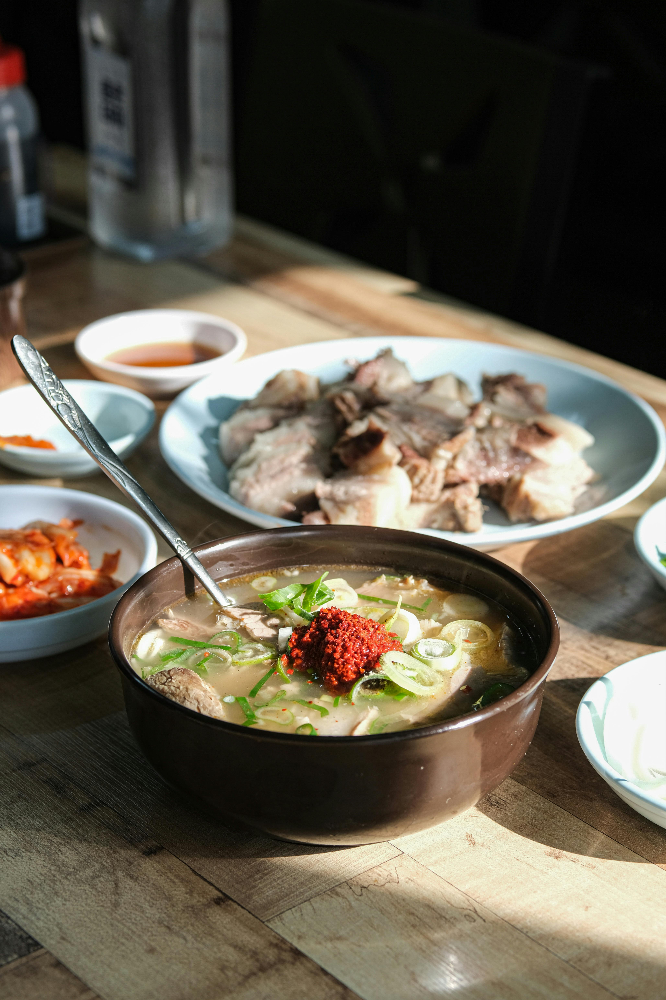
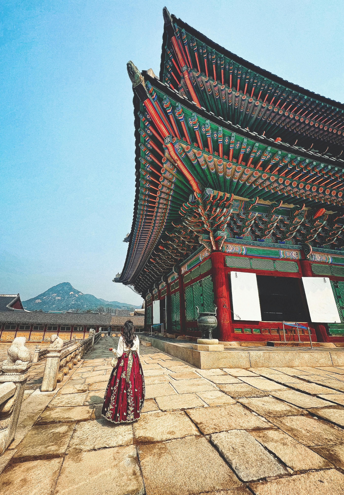
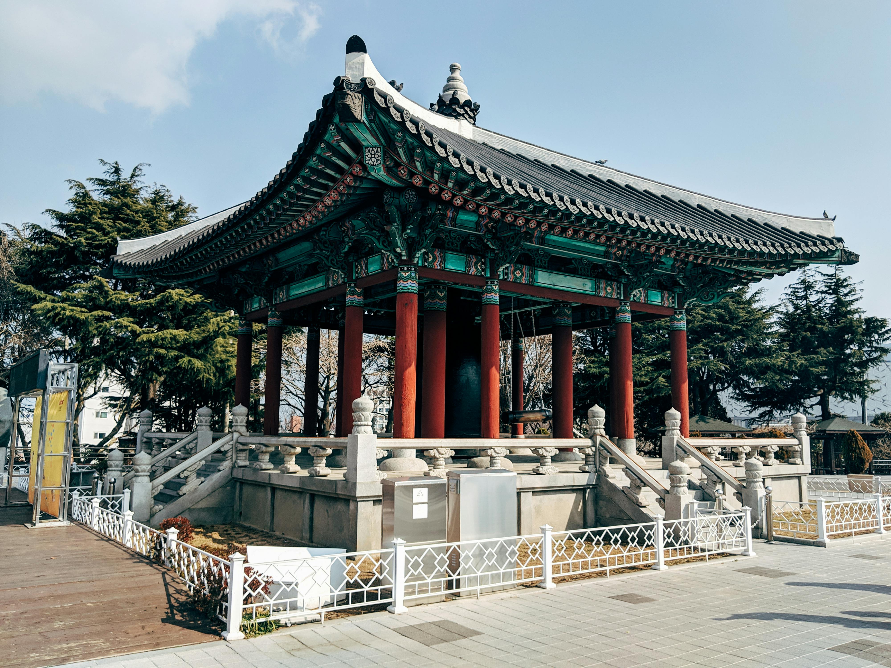

Best Travel Tips

- Best time to visit: Spring (April to June) and Autumn (September to November) for pleasant weather.
- Download a translation app for easier communication with locals.
- Try local street food for an authentic culinary experience.
- Use public transport: South Korea has an extensive and efficient public transportation system.
- Respect local customs, especially when visiting temples and historic sites.
- Stay connected: Consider renting a portable Wi-Fi device or getting a local SIM card.
- Learn basic Korean phrases to enhance your travel experience.
Best Cuisines and Dining Recommendations

- Kimchi: A traditional side dish of fermented vegetables.
- Bulgogi: Marinated beef grilled or stir-fried.
- Bibimbap: Mixed rice topped with vegetables, meat, and egg.
- Tteokbokki: Spicy rice cakes, often served as street food.
- Sundubu-jjigae: Spicy soft tofu stew.
- Japchae: Stir-fried glass noodles with vegetables and meat.
- Samgyeopsal: Grilled pork belly served with side dishes.
Best Accommodation Options

- Hotels: High-quality hotels in Seoul and Busan offer luxury and comfort.
- Hanok Stays: Experience traditional Korean homes in historical areas.
- Guesthouses: Budget-friendly options with a local touch.
- Jeju Resorts: Beachfront resorts for a relaxing getaway.
- Capsule Hotels: Unique and economical lodging in major cities.
Best Local Culture and Traditions

- K-Pop and K-Drama: Enjoy the global phenomena that shape modern culture.
- Traditional Festivals: Experience Chuseok and Seollal for unique cultural insights.
- Tea Ceremonies: Participate in traditional ceremonies to understand local customs.
- Hanbok Experience: Dress in traditional clothing for cultural experiences.
- Cultural Performances: Attend shows like Nanta and traditional music performances.
Best Top Tourist Attractions

- Gyeongbokgung Palace: A historic palace with stunning architecture.
- N Seoul Tower: Offers panoramic views of the city.
- Jeju Island: Known for its beautiful beaches and landscapes.
- Busan Beaches: Perfect for relaxation and water sports.
- DMZ Tours: Insight into the Korean conflict and unique history.
Best Transportation Guides
- Subway Systems: Efficient and user-friendly in major cities.
- Buses: Convenient for intercity and urban travel.
- KTX Train: High-speed train connecting major cities.
- Taxis: Readily available and relatively inexpensive.
- Bicycle Rentals: Promotes eco-friendly transportation in urban areas.
Best Outdoor Activities and Adventure

- Hiking: Explore trails in national parks like Seoraksan.
- Water Sports: Enjoy activities like surfing and jet skiing in coastal areas.
- Cultural Festivals: Participate in seasonal festivals.
- Scenic Bike Rides: Enjoy beautiful routes along rivers and coasts.
- Temple Stays: Experience the tranquility of Buddhist temples.
Best Weather and Best Time to Visit

- Spring (April to June): Mild temperatures and blooming cherry blossoms.
- Summer (July to August): Hot and humid; ideal for beach vacations.
- Autumn (September to November): Cool weather with beautiful fall foliage.
- Winter (December to February): Cold, perfect for skiing in places like Pyeongchang.